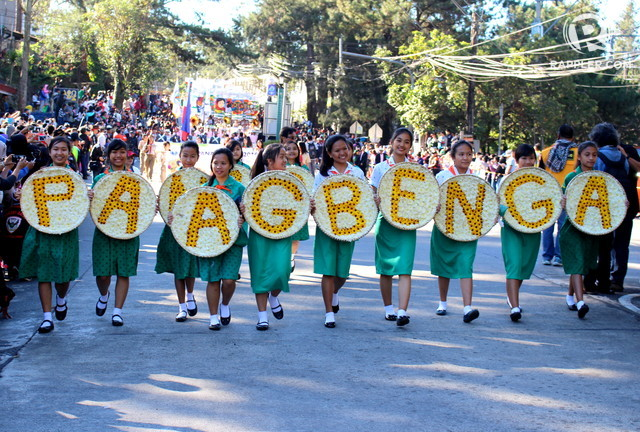
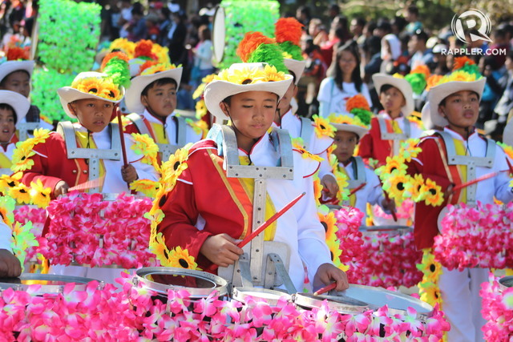
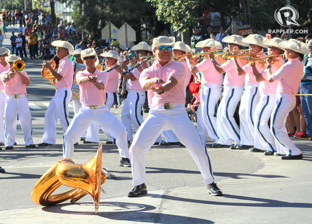

Panagbenga Festival, locally translated to the Blooming Flowers Festival, is a yearly flower event that takes place in Baguio City, bringing together tourists.
The use of the word Panagbenga is reflective of the blend of cultural influences from Malaysia and other South East Asian countries. The word translates to ‘the season of bloom’. The popular festival is scheduled for February, and is held to celebrate the abundance of flowers in the city.
Scenes from the colorful, blooming street parade at this year's Panagbenga Festival
BAGUIO CITY, Philippines – Warmth swept over Baguio City despite the February chill thanks to the Panagbenga 2016 Street Dance Parade and Drum and Lyre Dance Competition held Saturday, February 26.
A celebration of the season of bloom in the nation’s Summer Capital, the parade is participated by some elementary and high schools and performing groups in Baguio, the Cordilleras, and neighboring towns. To the delight of hundreds of locals, tourists, and spectators, the event was every part colorful, vibrant, and well, blooming.

Some performers embedded the Cordilleran festive dance cañao to their routines, while others spiced up the streets with choreography to popular songs played by the respective school bands.
Glen Miguel, choreographer of Ilocos Norte’s Pamulinawen dance group which won last year’s street dancing competition, says he feels that this event is an “opportunity”, especially for his team since they come from a coastal region and they’re glad to be part of Baguio’s ubiquitous event. “Naiiyak ang mga bata na nandito sila sa Baguio,” he said. “Ang saya-saya nila.” (The children are teary-eyed that they are now here in Baguio. They are very happy.)